Ingest AWS Service Logs via Log Hub Console
Log Hub provides two ways to ingest AWS Services logs, via Log Hub console or CloudFormation Stack. In this section, you will learn how to ingest Amazon CloudFront logs and RDS/Aurora MySQL logs using the Log Hub console.
CloudFront Logs
Estimated time: 12 minutes
CloudFront Standard Logs provide detailed records about every request that’s made to a distribution. In this chapter, you will learn how to ingest CloudFront access logs into Amazon OpenSearch service and build up dashboards. By following the steps, Log Hub will create the architecture in your AWS account: 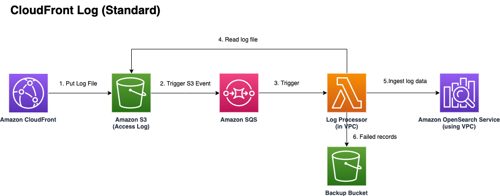
- Go to Log Hub Console.
- In the navigation pane, under Log Analytics Pipelines, choose AWS Service Log.
- Choose the Create a log ingestion button. 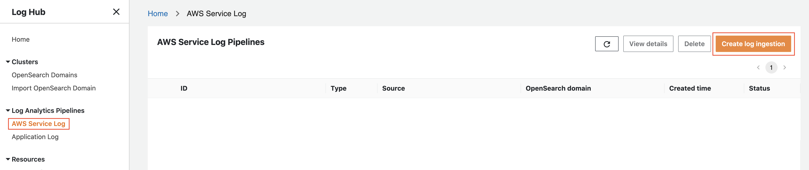
- In the AWS Services section, choose Amazon CloudFront.
- Choose Next.
- Under Specify settings, choose Automatic for CloudFront logs enabling. The automatic mode will detect the CloudFront log location automatically.
- For Automatic mode, choose the CloudFront distribution from the dropdown list. You just need to choose the one named LogHub-Workshop Assets 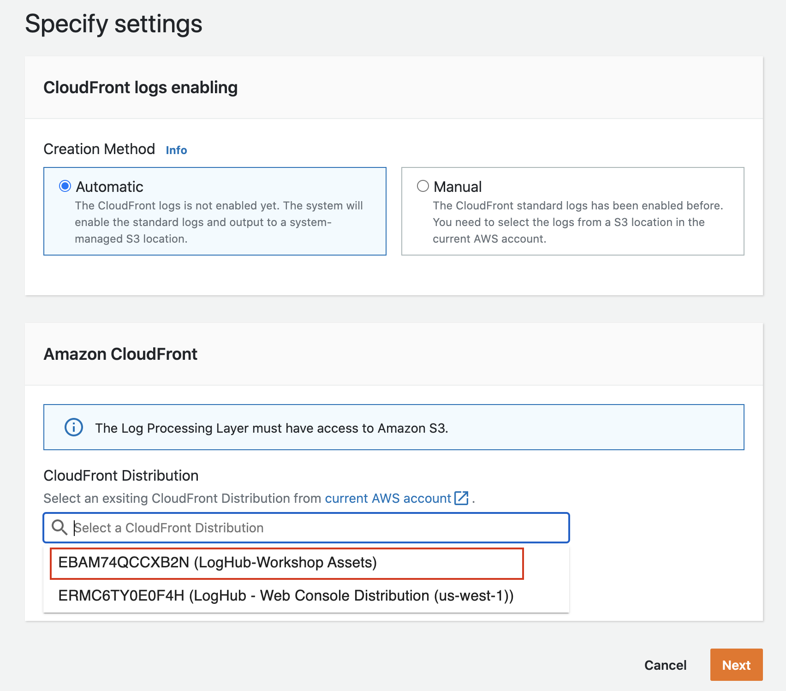
- Choose Next.
-
In Log Processing page, we can select multiple Ingested fields and Enriched fields. Please select all the enriched fields by clicking
Location -optionalandOS/User Agent -optionalThe location enriched functions will be demonstrated in the next section. 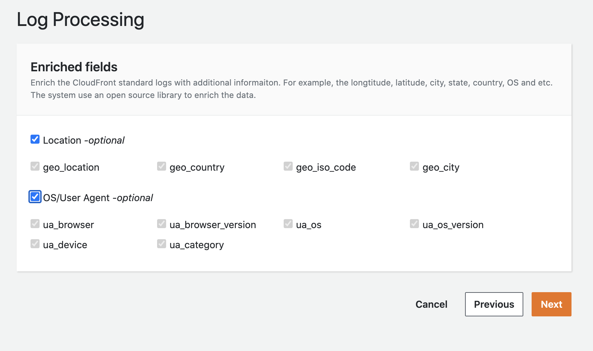 -
Click Next.
- In the Specify OpenSearch domain section, select an imported domain for Amazon OpenSearch domain. Remain the other part of the page unchanged.
- Choose Next.
- Choose Create.
You can view the status of the stack in the LogHub Web console: 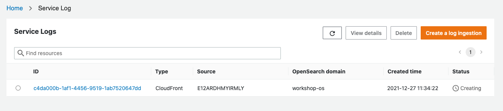 Status column shows creating means that the log pipeline is being created.
Hold on!
Before proceed to the next step, please wait until the pipeline status changes to Active. You can click the refresh button to get updated status.
Create CloudFront fake logs
After the pipeline status changes to Active, we can go to the Workshop Demo Website and start creating some CloudFront fake logs.
Note
We are simulating a real use case from a customer whose e-commercial website is frequently being visited, so fake logs can help us to better understand customer's business situation.
Firstly, go to the Workshop Demo Website, click Generate Logs, which is on the right-upper corner. Then click Generate CloudFront Logs.
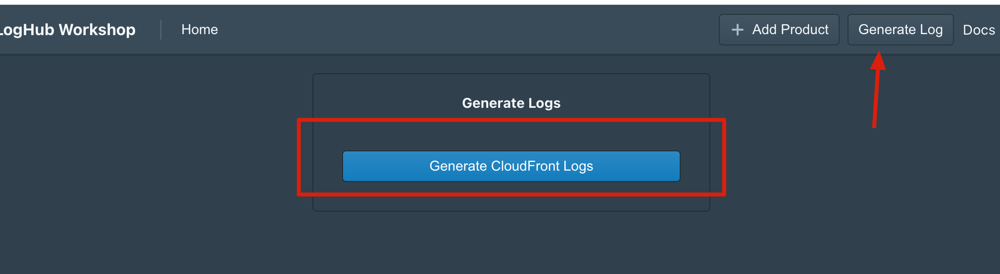
Wait for a few seconds until it shows the following pop-up:
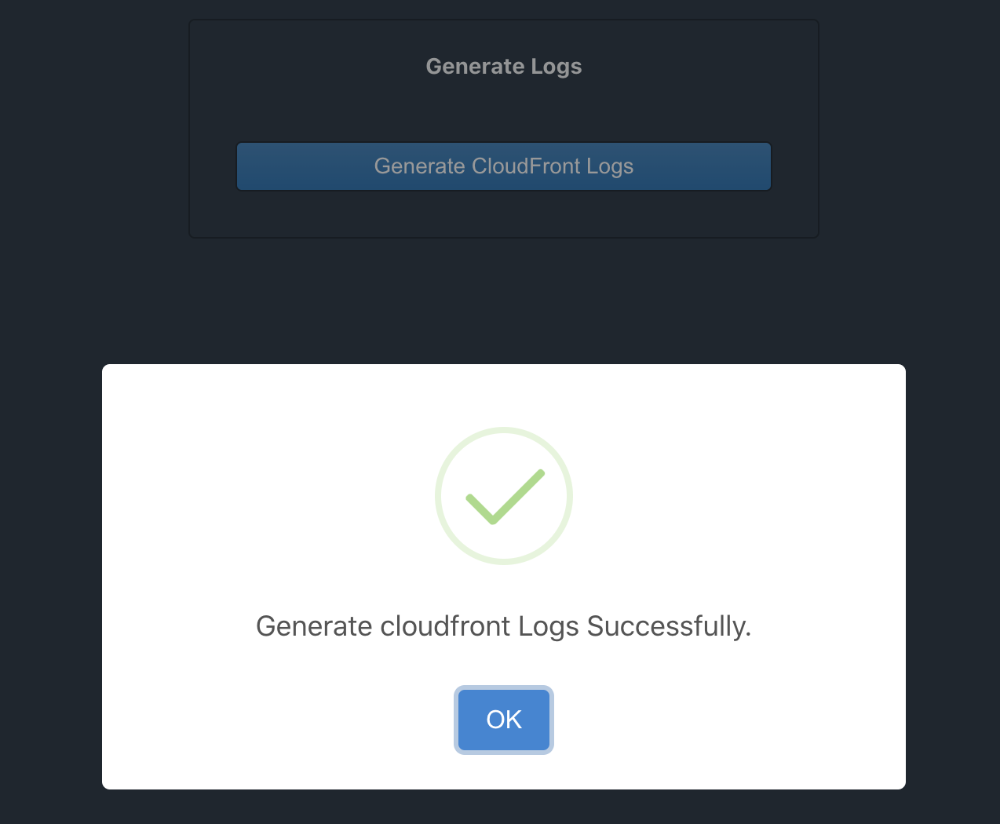
We have finished the log generation step!
View Cloudfront Log Dashboard
Since we have created the CloudFront Log Pipeline and generated fake log, now let's go back to the OpenSearch Dashboard and have a look!
-
Open the Dashboard page in your browser.
-
Go to the location shown in the graph below, you can find the CloudFront dashboard have already been imported for you, which name is
xxxxxxxxxxxxx-cloudfront-dashboard. Click it and you can view all the details by yourself: 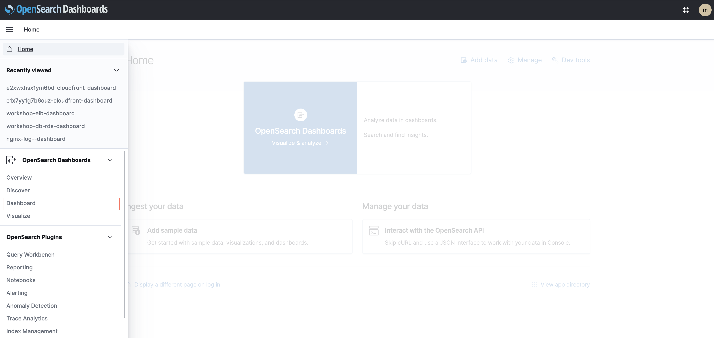
The CloudFront dashboard should look like this: 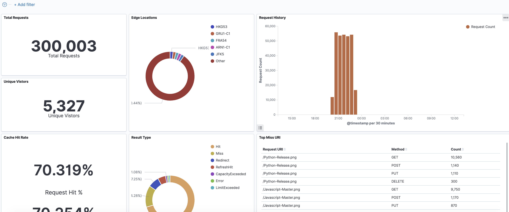
So far, we have successfully created a service pipeline for CloudFront Service, and we are able to get insight of the dashboard in OpenSearch.
RDS/Aurora MySQL Logs
Estimated time: 10 minutes
In this section, we will describe how to ingest logs from Amazon RDS into Amazon OpenSearch service and build up visualization dashboards. By following the steps, Log Hub will create the architecture in your AWS account: 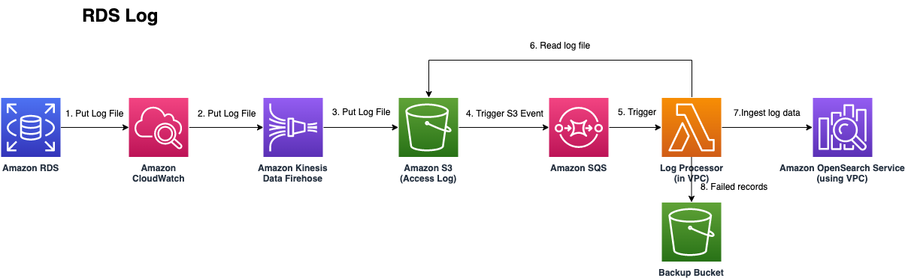
- Go back to the Log Hub Console.
- In the navigation pane, under Log Analytics Pipelines, choose AWS Service Log.
- Choose the Create a log ingestion button.
- In the AWS Services section, choose Amazon RDS.
- Choose Next.
- Under Specify logs settings, choose Automatic.
- Choose the RDS cluster from the dropdown list.
We choose
MySQL-workshop-db. 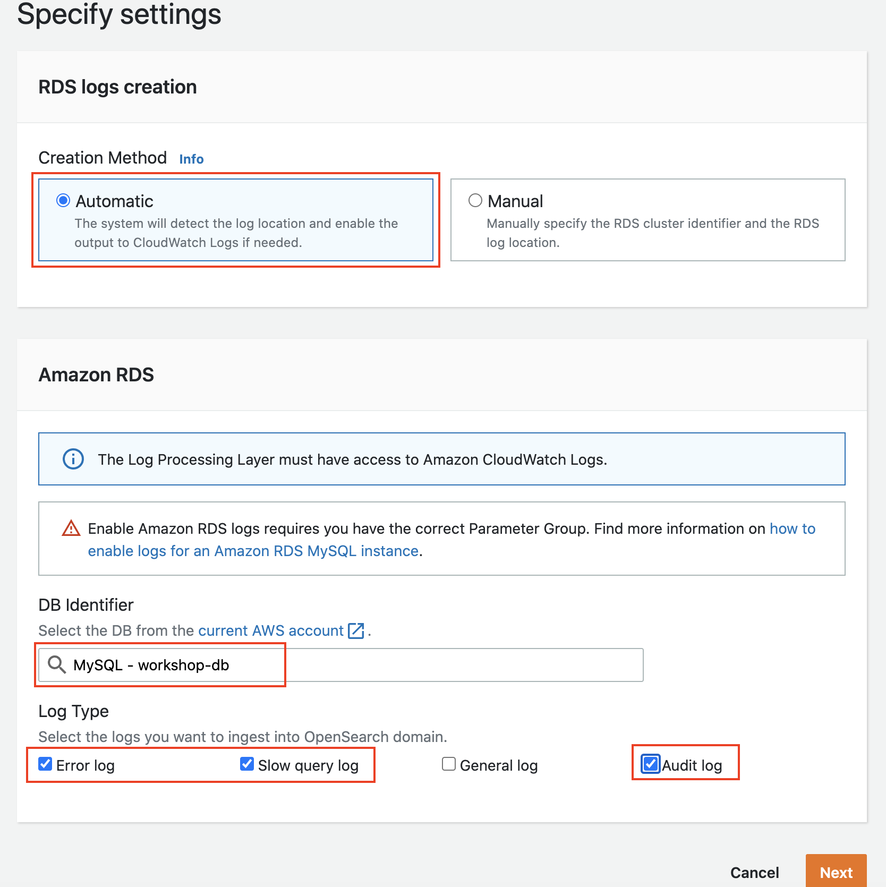 Make sure you select the Audit log option! - Choose Next.
- In the Specify OpenSearch domain section, select an imported domain for Amazon OpenSearch domain. Remain the other part of the page unchanged.
- Choose Next.
- Choose Create.
You can view the status of the stack in the LogHub Web console.
Status column shows creating means that the log pipeline is being created.
Hold on!
Please wait until the status change to "Active" before proceeding.
Generate slow query logs
Now we can go to the Workshop Demo Website and start creating some RDS logs.
Firstly, go back to Workshop Demo Website home again, we can see three products listed on the Website. We click the View Detail button under Funny Moto.
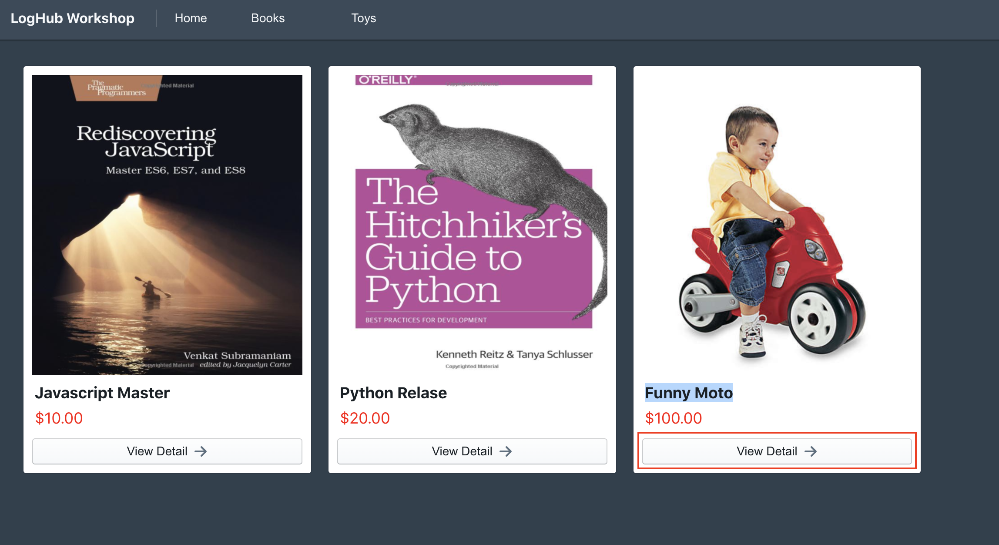
Note
The product details will show up very slowly. Because we are generating slow query logs here.
That's what we expected, because we are generating slow query logs now.
View RDS Log Dashboard
We can now leave the website behind and go to OpenSearch Dashboard to take a peek.
-
Open the Dashboard page in your browser.
-
Go to the location shown in the graph below, you can find the RDS dashboard have already been imported for you, which name is
workshop-db-rds-dashboard. Click it and you can view all the details by yourself:
The RDS dashboard should look like this: 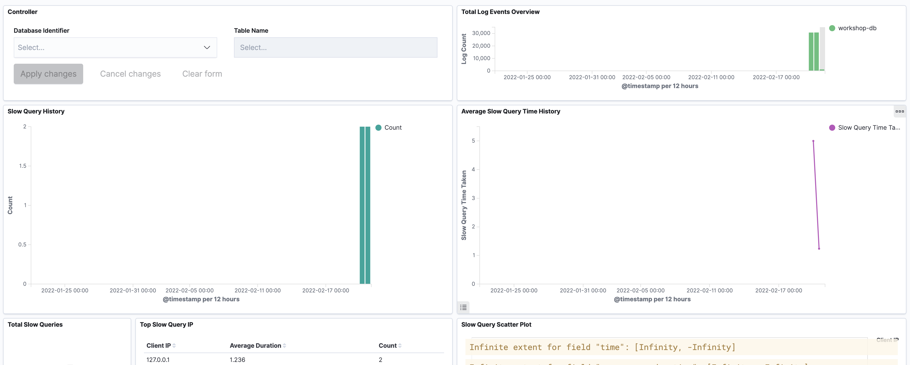
Congratulations! We have created the service log pipeline for RDS successfully.